Uygulama yeni motor, 201 profesyonel sayfa, 3 zorluk seviyesi, serbest çizim, bitiş kutlaması ve Apple uyum düzeltmeleriyle çalışıyor. Gelir modeli kurul kararıyla tek seferlik "Tam Sürüm" kilidi; kodu hazır ve bir derleme bayrağının arkasında bekliyor. Mağazaya çıkış için kalan adımların çoğu senin hesaplarında (bölüm 8).
flutter analyze temiz, 97 test geçiyor. iOS simülatör ve Android derlemeleri geçiyor; Android'de bütün yeni akışlar emülatörde denendi.Son derlemeden, CobiPaint_Pixel emülatöründen.
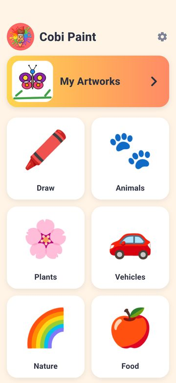
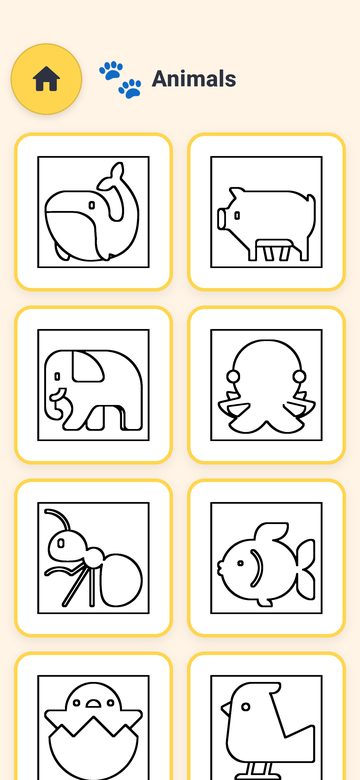
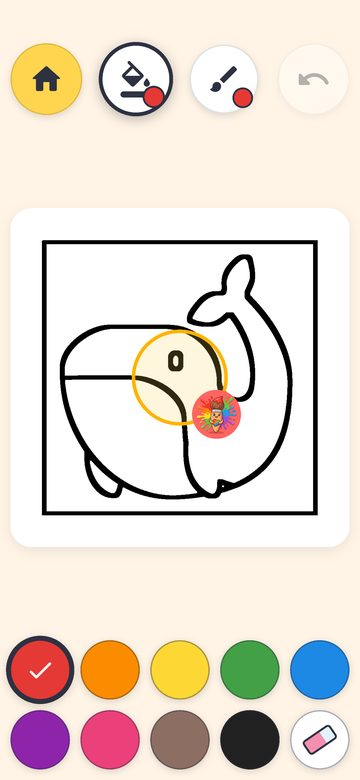
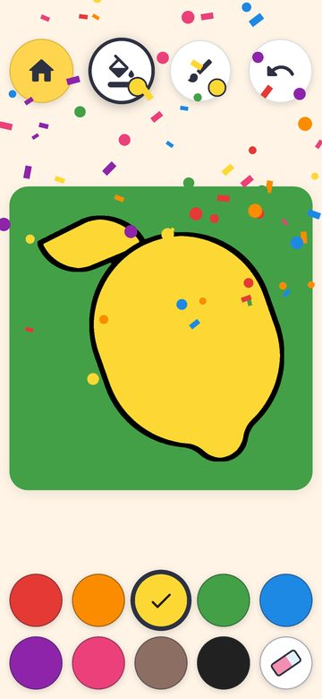
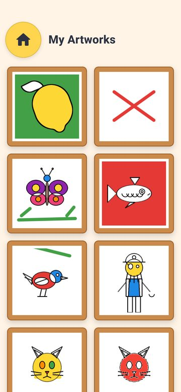
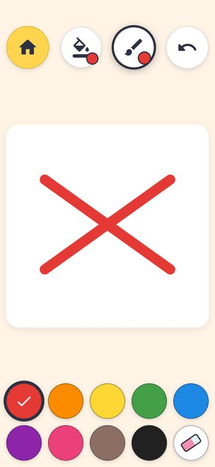
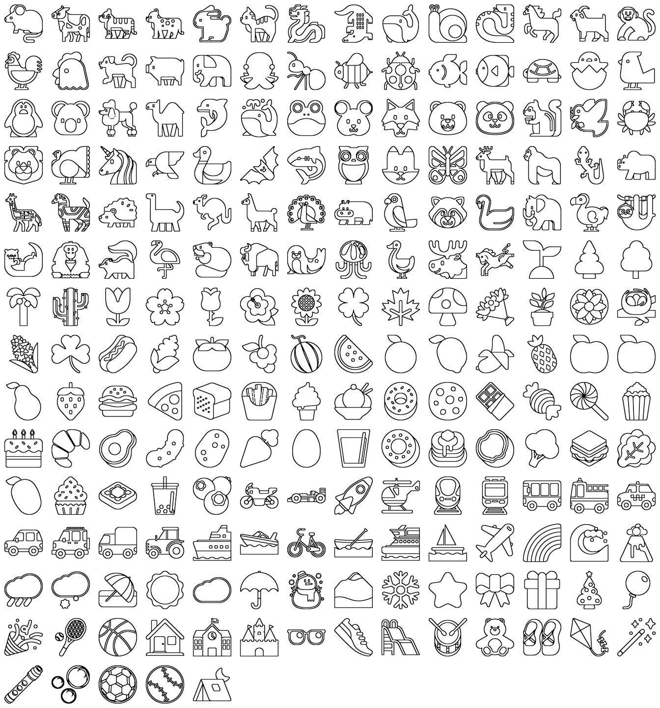
Araştırma ajanı 10 kaynağın lisansını okudu; tam rapor içerik raporunda. Seçim: Fluent UI Emoji "Flat" (MIT, commit 1ffb34c). Twemoji ve OpenMoji'nin CC lisanslarında App Store'un kopya korumasıyla çatışabilen bir madde var; o yüzden elendi.
| Adım | Ne yapar | Nerede |
|---|---|---|
| Katalog | Unicode listesinden 2–5 yaşa uygun konular (insan, yüz, bayrak, marka, silah, alkol, dinî simge yok); Türkçe ve İngilizce adlar CLDR'den; sabit ücretsiz küme (free: true, kategori başına 8). | tool/pages/catalog.json |
| Üretim | SVG indir (sabit commit) → QuickLook ile 1024 px → renk sınırlarına 11 px siyah kontur, beyaz zemin dışarısı → sayfa denetimi → seviye → assets/pages/ ve lib/data/builtin_images.dart. | tool/pages/build_pages.py, emoji2page.py |
| Seviye | 1: en çok 4 parmak boyu alan ve 10 bölge (83 sayfa) · 3: 8+ parmak alanı ya da 16+ bölge (45) · 2: kalanlar (73). Aynı kural Dart'ta da var; test her sayfayı doğruluyor. | PageCheck.level, level_for |
| Sıralama | Çocuğun seviyesi: 4 sayfa boyanınca bir üst seviye; Minik modda 2'de durur; ebeveyn alanından sabitlenir. Hiçbir sayfa kilitli değil. | lib/data/page_order.dart |
| Lisans | MIT metni pakette ve Ebeveynler → Lisanslar ekranında. | assets/licenses/fluentui-emoji.txt |
Eski 76 dosya pakette kaldı: kayıtlı eserler yoluyla sayfayı buluyor. Fluent'ta olmayan 7 konu (T-Rex, orka, deniz feneri, yoyo, piñata, tişört, kral kelebeği) atlandı. Hâlâ en iyi yol hibrit: bu set ilk 2 seviye için yeterli; illüstratörle çizilecek sahne sayfaları 3. seviyeyi zenginleştirir.
İki kurul, her biri beş üye: 3 yaş UX (veto), Apple/Google uyumu (veto), Flutter mühendisi, ebeveyn-ürün, tasarım/içerik ya da iş analisti. Geçme şartı 4/5 ve veto yok.
| Aday | Oy | Karar | Durum bu sabah |
|---|---|---|---|
| Sesli yönlendirme | 5/5 | Geçti | Altyapı hazır: kayıtlı klip çalar, VoiceOver açıkken susar, ebeveyn anahtarı var. Klipler kaydedilmeli (tool/voice/README.md). |
| Serbest çizim sayfası | 5/5 | Geçti | Yapıldı (Çiz kartı). |
| Kademeli seviyeler | 5/5 | Geçti | Yapıldı. |
| Bitiş ödülü | 5/5 | Geçti | Yapıldı; kurulun şartıyla yıldız yok, yalnız kutlama. |
| Eser duvarı | 5/5 | Geçti | Yapıldı. |
| Fotoğraflara kaydet ve yazdır | 5/5 | Geçti | Kapı arkasında paylaşım; Android'de doğrudan galeriye kayıt ve yazdırma da yapıldı (bölüm 15). |
| Hareketsizlik ipucu | 5/5 | Geçti | Yapıldı. |
| Çıkartma aracı | 4/5 | Geçti | Yapıldı (bölüm 13); kütüphane 201 sayfa olduğu için kurulun "200'ü geçince" şartı sağlandı. |
| Günün sayfası ve sezon | 4/5 | Geçti | Sonraya: önce sezon temaları normal kategori olarak. |
| Ek fırçalar | 4/5 | Geçti | Yapıldı (bölüm 14): sprey, simli ve neon fırçalar; artımlı pişirme şartı 2. fazda sağlanmıştı. |
| Ayna çizimi | 4/5 | Geçti | Yapıldı (bölüm 12). |
| Renkli örnek ve sihirli boya | 3/5 | Veto | "Doğru renk bu" baskısı; çocuğun rengi seçme hakkını alır. |
| Sayıyla boyama | 1/5 | Veto | Yanlış renkte boyamayan oyun başarısızlık getirir; hedef 6+. |
| Boyamanın tekrarı | 2/5 | Reddedildi | Kayıt formatı sırayı tutmuyor; çocuğa katkısı yok. |
| Harf ve rakam izleme | 1/5 | Veto | 3 yaş için erken; uygulamayı alfabe uygulamasına çevirir. |
| Fotoğraftan sayfa | 1/5 | Veto | Küçük ve açık alanlar üretir; Karar 3'te dondurulmuştu. |
| Aday | Oy | Karar | Durum bu sabah |
|---|---|---|---|
| Tek seferlik Tam Sürüm kilidi | 5/5 | Geçti | Kod hazır, COBI_IAP bayrağı kapalı. Mağaza ürünü senin işin. |
| Google Play yayını | 5/5 | Geçti | Kod hazır (eski reklam dosyaları silindi); Console adımları senin. |
| Birincil kategori Education | 5/5 | Geçti | App Store Connect'te senin işin. |
| 15 ülkede kademeli yayın | 5/5 | Geçti | Vitrin seçimi senin işin; İngilizce yedek dil hazır. |
| 10 dile yerelleştirme | 5/5 | Geçti | 10 taslak lib/l10n/drafts/ altında (de, fr, es, it, nl, pl, pt, ja, ko, ar; 78'er anahtar, yapay zekâ çevirisi, @@x-draft işaretli). Yerli inceleme olmadan derlemeye girmez. |
| Dilden bağımsız ebeveyn kapısı | 5/5 | Geçti | Yapıldı: iki basamaklı sonuçlu çarpma. |
| Yaş sinyali API'leri | 5/5 | Geçti | Sonraya: yalnız kilitle aynı sürümde; iOS 26.2 SDK gerekir. |
| Şimdilik ücretsiz kal | 3/5 | Reddedildi | Satın almaların ~%80'i ilk iki günde; ücretsiz dönem dönüşmez. |
| Tematik paketler | 1/5 | Veto | Satın alma durumuna göre değişen ana ekran 3 yaşı şaşırtır. |
| Yıllık abonelik | 0/5 | Çift veto | Süre bitince çocuğun galerisi küçülür (Ç6); 3.1.2 "sürekli değer" zayıf. |
| Ömür boyu + abonelik | 0/5 | Çift veto | Aynı sorunlar; iki fiyat ebeveyni yönlendirme kalıbı. |
Kurulların tam gerekçeleri ve her üyenin şartları oturum kaydında; özetleri gelir raporunun ve bu raporun ilgili bölümlerinde.
| Konu | Karar | Kaynak |
|---|---|---|
| Model | Non-consumable "Tam Sürüm" (com.cobi.paint.full), Aile Paylaşımı açık, yalnız kapı arkasındaki tek ekran; fiyat mağazadan okunur, geri yükle düğmesi aynı ekranda. | Apple 1.3 / 3.1.1, Bimi Boo örneği, RevenueCat 2026 medyanları |
| Fiyat | Taban ABD 5,99 $; Türkiye elle ₺199,99; diğer vitrinler otomatik eşitleme; 60 gün sonra gelişen pazarlar için gözden geçir. | Rakip fiyatları (Pok Pok, Sago, Bimi Boo) |
| Ücretsiz küme | Kategori başına 8 sayfa (seviyelere dağılmış, toplam 48); bir kez ücretsiz olan sayfa hep ücretsiz kalır; çocuk ekranı satın alma öncesi ve sonrası aynı. | Kurul şartı |
| Komisyon | Apple Small Business %15; Google ilk 1 M$ %15 (2026–27'de %10 + ücret). ₺199,99'dan cebe ≈ ₺135–142. | Gelir raporu 2.2 |
| Vergi | GVK mükerrer 20/B istisnası: gerçek kişi, istisna belgesi, özel banka hesabı, %15 stopaj, 2026 sınırı 5,3 M TL (teyit et). | Gelir raporu 2.6 |
| Ülkeler | Önce ABD, UK, CA, AU, TR, DE; sonra JP, FR, ES, KR, IT, NL, SE, SA/AE, PL. RU, CN kapalı; BR ertelenir (ECA Digital). | Gelir raporu 3.1 |
Hepsi faz1/boyama-motoru'da, Faz 0 commit'i f3c362e'den sonra. Hiçbiri push edilmedi.
| Commit | Zaman | Konu |
|---|---|---|
a94e631 | 03.11 00:47 | feat: Region engine and coloring document (phase 1b, 1c) |
be8272b | 03.11 00:54 | feat: Toddler-first gesture machine and layered paint canvas (phase 1a, 1d) |
7eadb40 | 03.11 01:11 | feat: Toddler-first coloring app on the new engine (phases 1c-5) |
a6b769c | 03.11 01:56 | feat: Apple HIG and App Store compliance pass (phase 4) |
36d548d | 03.11 01:56 | test: Page check for toddler-friendly coloring pages (phase 3) |
d02d63a | 03.11 01:58 | chore: Remove 69 unused strings |
a72c6e9 | 03.11 01:59 | docs: Toddler UX project skill and accessibility guideline tests |
0eb2fad | 03.11 02:01 | feat: Parents can turn off haptics |
21e333a | 03.11 02:12 | feat: Defer iOS edge gestures while the child colours |
18446e2 | 03.11 02:12 | fix: Readable grown-up screens and texts in the app's language |
dba6ea5 | 03.11 02:16 | fix: Minik mode has 9 colours, not 8 |
c746054 | 03.11 02:22 | docs: Night report, UX research report and plan status |
30b846a | 03.11 02:57 | feat: 201 coloring pages from Fluent UI Emoji, levels, free drawing, finish celebration |
9b644c6 | 03.11 03:08 | fix: Page converter treats the renderer's white sheet as outside |
aa4ae2d | 03.11 03:09 | docs: Content and monetization research reports, skill notes on the page pipeline |
e815db2 | 03.11 03:10 | docs: Page counts, page pipeline notes and version 2.0.0+4 |
6344ff0 | 03.11 03:14 | feat: Spoken names groundwork, blank page sharing, old ad files removed |
a08871c | 03.11 03:16 | feat: Language-free parental gate (multiplication) |
03559e9 | 03.11 03:28 | feat: Full Version unlock groundwork behind a build flag |
de321f5 | 03.11 03:32 | fix: Dark text on filled and outlined buttons |
8bf5dd0 | 03.11 03:33 | docs: Night report for the whole night and plan status update |
9ef73bf | 03.11 03:33 | docs: Money rule in the toddler UX skill |
e9e6661 | 03.11 07:22 | docs: Draft translations in 10 languages and the final night report |
9406789 | 03.11 07:48 | feat: Rainbow and crayon brushes, incremental brush baking (phase 2) |
e8060b5 | 03.11 08:18 | feat: The brush in the child's hand |
694fc9c | 03.11 08:18 | test: Full-app tests from the splash to a saved picture |
| Ne | Nasıl | Sonuç |
|---|---|---|
| Kod kalitesi | flutter analyze, flutter test | 0 bulgu, 97 test geçti |
| Erişilebilirlik | Dokunma hedefi, etiket ve kontrast kılavuz testleri, uygulamanın kendi temasıyla | Kontroller, kategori, kapı, Ebeveynler alanı ve Tam Sürüm ekranı geçiyor |
| Sayfalar | Sayfa denetimi testi 201 sayfayı ölçüyor ve seviyeyi kataloğa karşı doğruluyor | 0 sorunlu sayfa |
| Satın alma | Sahte mağazayla testler: teslim, geri yükleme, Ask to Buy beklemesi, hata, yeniden açılışta hak | Geçti; gerçek mağaza denenmedi |
| Android akışları | CobiPaint_Pixel emülatörü | Ana ekran, Çiz, kategori ve seviye vurgusu, ipucu, dolgu, bitiş kutlaması, eser duvarı, yeni kapı, %200 metin, yatay |
| iOS | Simülatör derlemesi (StoreKit eklentisi dahil), CobiPaint iPhone'da açılış | Derleme geçti (StoreKit eklentisi dahil); CobiPaint iPhone simülatöründe ana ekran açıldı |
Sıra, yayına çıkışı engelleme derecesine göre. Hiçbirini ben yapamam; hesaplar ve imzalar senin.
flutter config --enable-uiscene-migration (Xcode 27'den önce şart).store_listing.md: 200+ sayfa, 3 seviye, galeri vaadi yok), tr-TR locale, birincil kategori Education (Games ikincil), yaş anketi (sosyal medya sorusu), Kids bandını 6–8'den "5 ve altı"na almak için App Review'a yazılı soru, DSA trader bilgisi (posta kutusu + ayrı telefon), ekran görüntüleri gerçek Minik modundan.com.cobi.paint.full, Family Sharing açık (geri alınamaz), taban 5,99 $, TR ₺199,99, ürün adı ve açıklaması her dilde, Paid Apps sözleşmesi ve vergi formları. Ürün hazır olunca uygulama --dart-define=COBI_IAP=true ile derlenir; o zamana kadar bütün sayfalar ücretsiz.index.html yalnız yeni sürümle birlikte push edilir (eski reklamlı sürüm yayındayken app-ads.txt'nin silinmesi doğrulamayı bozar).tool/voice/README.md'deki 29 satırı iki dilde kaydet (ya da lisanslı seslendirmen); dosyaları assets/voice/tr|en/ altına koy ve pubspec'e iki satır ekle. Kod hazır.lib/l10n/drafts/ altındaki 10 taslak yerli konuşan biri onaylamadan supportedLocales'e girmez; onaylanan dil ARB'ye taşınır, CFBundleLocalizations ve Play dil listesi genişler.faz1/boyama-motoru her şeyi içeriyor; hazır olunca master'a PR aç. Android release keystore'unu yedekle.| İş | Neden | Önerilen yol |
|---|---|---|
| Yaş sinyali API'leri | Texas/Utah/Louisiana ve Brezilya; yalnız kilitle birlikte | Declared Age Range + Significant Change (iOS 26.2 SDK), Play Age Signals betadan çıkınca; ayrı PR |
| İllüstratör sayfaları | 3. seviye sahneleri ve zamanla emoji sayfalarının yerini alacak özgün çizimler | İçerik raporunun 6. bölümü: 3 illüstratöre 5'er sayfalık deneme, sonra 180 sayfa |
| Android'de doğrudan yazdırma ve galeriye kayıt | Yapıldı (bölüm 15) | MediaStore ve PrintHelper kanalı, ebeveyn kapısının arkasında; iOS paylaşım menüsünde zaten var |
| Çıkartma, ek fırçalar, ayna, sezon | Kurulun şartlı onayları | Ayna (bölüm 12), çıkartma (13) ve fırçalar (14) yapıldı; sezon kategorisi atlandı (bölüm 11) |
| Entegrasyon testi | Uygulamanın tamamını açan test yok | integration_test: ana ekran → sayfa → dolgu → eve dönüş |
| Tasarım sistemi | Yazı tipi, ikon seti, maskot pozları | design:design-system skill'iyle |
| iPad ayrıntıları | HIG 8 ve 12 | Cmd-Z ve üç parmak geri al yapıldı (bölüm 16); Windowed mod denemesi Xcode 26 ister |
emulator-5554) ve açık duran iPhone 16 simülatörüne dokunmadım. Testler CobiPaint_Pixel (port 5580) ve CobiPaint iPhone (UDID 15D6AEE9-8781-4319-B6AF-AA7253342616) üzerinde; ikisi de açık bırakıldı.--dart-define=COBI_IAP=true olmadan kapalı; mağaza ürünü olmayan bir derleme bütün sayfaları ücretsiz gösterir.android/ içinde ./gradlew app:assembleDebug -Ptarget-platform=android-arm64 --no-daemon çalışıyor.dart'ı kullanılır (Homebrew dart 3.8 eski).| Ne | Durum |
|---|---|
PR #1 (faz1/boyama-motoru → master) | Açıldı ve sen merge ettin. docs/ artık GitHub Pages'ta yayında: yeni gizlilik politikası canlı, app-ads.txt yok. Yayındaki eski reklamlı sürüm için AdMob doğrulaması bu yüzden düşebilir; yeni sürüm reklamsız olduğu için kalıcı bir sorun değil. |
| Fırçalar (Faz 2) | Fırça katmanı artımlı pişiyor; gökkuşağı (Minik ve Büyük) ve pastel (Büyük) fırçaları eklendi. Fırça düğmesine ikinci dokunuş türü değiştiriyor; menü yok. Emülatörde denendi. |
| Elde fırça görseli (senin isteğin) | Çizerken parmağın altında fırça, pastel ya da silgi görünür; ucu parmakta, sapı sağ yukarıda. Görseller Fluent UI Emoji setinden (MIT). Emülatörde denendi. |
| Uçtan uca testler | test/app_test.dart gerçek ekranlar ve motorla açılıştan kayıtlı resme kadar gidiyor; kategori ekranından sayfa açmayı da deniyor. Toplam 97 test, analiz temiz. |
PR #2 (faz2/firca-ve-testler → master) | Açık: github.com/muazcoban/cobi-paint-mobile/pull/2. CI (analyze + test) PR'da koşuyor. |
| Mevsim kategorisi | Atlandı: aday konuların neredeyse hepsi zaten başka kategorilerde; ayrı kategori kopya olurdu. İllüstratör sayfalarıyla birlikte yeniden bakılır. |
Sıradaki adaylar (kurul onaylı, yapılmadı): yaş sinyali API'leri (kilitle birlikte, Xcode 26 ister), sezon temaları (illüstratör sayfalarıyla); açık iş olarak iPadOS 26 pencereli kip (Xcode 26). Ayna çizimi bölüm 12'de, çıkartmalar bölüm 13'te, fırçalar bölüm 14'te, Android'de galeri ve yazdırma bölüm 15'te, iPad'de sistem geri al bölüm 16'da. Senin adımların bölüm 8'de aynen geçerli.
Branch faz3/ayna-cizimi (PR #2'nin üstüne kurulu). Serbest çizim sayfasında ayna: bir parmak çizgisi sayfanın ortasındaki ayna çizgilerine göre kopyalanır. Minik'te tek düğme, dört yönlü açık ya da kapalı; Büyük'te aynı düğme kapalı → iki → dört → altı diye döner. Menü ya da yeni satır yok.
| Kurul koşulu (3 Kasım) | Nasıl karşılandı |
|---|---|
| Yalnız serbest sayfada; boyama sayfalarında yok | Düğme yalnız freeDraw sayfasında; boyama sayfaları doldur düğmesini koruyor. Uygulama testi iki durumu da denetliyor. |
| Ana ekrana yeni kart ya da satır eklenmez | Hiçbir ekran değişmedi; ayna, Çiz kartının açtığı sayfanın içinde. Serbest sayfada doldur düğmesinin yerine geçti: 375 pt telefona beşinci 82 pt düğme sığmıyor, boş sayfada kova zaten yalnız kâğıdı boyuyordu. |
| Minik'te seçim yok, tek sabit simetri | Minik'te düğme dört yönlü aynayı açıp kapatır. İki ve altı yalnız Büyük'te. |
| Bir ayna çizgisi tek geri alma adımı; kopya stroke saklanmaz | Stroke.symmetry alanı (JSON anahtarı m, bilinmeyen değer 1 sayılır). Kopyaları PageLayers.paintStroke çizim anında üretir; belge tek stroke tutar. |
| Silgi de aynalı | Silgi stroke'u aynı simetriyi taşır, dört kopyada birden siler (emülatörde görüldü). Bu arada bir hata düzeldi: silgi yalnız keçeli kalem boyasını sayıyordu, sayfada yalnız gökkuşağı ya da pastel varken silmiyordu. |
| Kip ikonla seçilir, VoiceOver etiketi taşır | MirrorGlyph: bir yaprak ve kopyaları (kapalı: tek yaprak; iki: filiz; dört: yonca; altı: çiçek). Etiketler "Ayna kapalı", "İki/Dört/Altı yönlü ayna"; seçili durum semantics'te. |
| Altı yönlü çizgi en eski cihazda takılmadan | Emülatörde akıcı; gerçek cihazda ölçülmedi. |
Tuvalde ayna açıkken ince gri ayna çizgileri görünür; boyanın altında kalır ve kaydedilen resme girmez. Kaydedilmiş bir ayna çizimi yeniden açılınca son çizginin simetrisiyle devam eder. Ses listesine mirror ("Ayna" / "Mirror") anahtarı eklendi.
Testler: 112 (simetri dönüşümleri, dört kadranda boya, aynalı silgi ve tek adımda geri alma, JSON gidiş dönüşü, tuval, uygulama testinde Minik anahtarı ve Büyük döngüsü). Emülatörde (CobiPaint_Pixel) Minik açık/kapalı, dört kopya, geri al, silgi; Büyük'te iki, dört, altı, kapalı ve altı yönlü çizim görüldü. iOS'ta denenmedi (platforma özgü kod yok).
| HIG / App Review maddesi | Sonuç |
|---|---|
| Dokunma hedefi ≥ 44 pt | Uyumlu: 79 pt (Minik telefon), 61 pt (Büyük telefon), tablette daha büyük. |
| Toggle davranışlı düğme: her durumda farklı görünüm, yalnız renge dayanmaz | Uyumlu: koyu çerçeve + ölçek + gölge, ayrıca glifin yaprak sayısı değişir. |
| HIG iki durumlu toggle tarif eder; Büyük'te dört durum döner | Gerekçeli sapma: fırça düğmesiyle aynı kalıp, çocuğa menü açtırmamak için; her durumun ikonu ve etiketi ayrı. |
| Basılı durum ve geri bildirim | Uyumlu: KidButton sıkışması, haptik, tık sesi, kopyalar parmağın altında anında. |
| VoiceOver etiketi ve durum | Uyumlu: durum adı etikette, selected özelliği açık. |
| Reduce Motion | Uyumlu: ayna çizgileri animasyonsuz görünür; yeni animasyon yok. |
| Kontrast | Uyumlu: glif 0xFF2D3142 beyaz üstünde (~12:1); kılavuz çizgiler süs, bilgi taşımaz. |
| Kids Category 1.3 / 5.1.4 | Uyumlu: veri, ağ, izin, metin eklemiyor. |
Branch faz4/cikartmalar. Her sayfada 16 çıkartma (Fluent UI Emoji, MIT, sayfalarla aynı kaynak ve commit): yıldız, kalp, ayçiçeği, kelebek, güneş, uğur böceği, balon, gökkuşağı, çilek, gülen yüz, bulut, taç, elma, nota, ay, pırıltı. Yeni düğme yok: fırça düğmesinin döngüsü keçeli kalem, gökkuşağı, (Büyük'te pastel) ve çıkartma diye dönüyor. Çıkartma kipindeyken düğme sıradaki çıkartmanın resmini gösteriyor; dokunuş onu yapıştırıyor, sürükleme bir çıkartma genişliği aralıkla iz bırakıyor, her çıkartma hafif eğik.
| Kurul koşulu (3 Kasım) | Nasıl karşılandı |
|---|---|
| 12–16 çıkartma, sayfa stiliyle aynı kaynak | 16 çıkartma, tool/stickers/build_stickers.py ile sabit commit'ten indirilip 256 px PNG olarak üretiliyor; liste lib/data/stickers.dart. |
| 375 pt telefona yeni 82 pt üst düğme eklenmez | Düğme eklenmedi; çıkartma, fırça düğmesinin döngüsünde bir kip. |
| Minik'te seçim ekranı yok, her dokunuş sıradaki çıkartmayı basar | İki kipte de seçici yok; sıra sabit, düğme sıradakini gösteriyor. Büyük'te fırça boyutu hücresi çıkartma boyutunu da değiştiriyor (küçük, orta, büyük). |
| Geri alınabilir | Bir parmağın bütün izi tek adım; geri al hepsini kaldırıyor. Silgi değdiği çıkartmaları söküyor, geri al aynı sıraya geri koyuyor. |
| Belgenin isteğe bağlı listesinde saklanır | ColoringDocument.stickers; JSON'da yalnız çıkartma varsa stickers anahtarı yazılıyor. Eski sürümler anahtarı yok sayar, resim bozulmaz. |
Çıkartmalar çizgi resmin üstünde duruyor, gerçek çıkartma gibi; sayfanın bitmesine sayılmıyor (kutlama yalnız boyayla). Serbest sayfada ayna açıkken çıkartmalar da kopyalanıyor: dört yönlü aynada bir dokunuş dört çıkartma, eğimleri aynalı. Kaydedilen resimde ve küçük resimde çıkartmalar var. Renk seçince kip boyamaya dönüyor; Çiz sayfasında fırçaya, boyama sayfasında doldurmaya.
Testler: 129 (çıkartma modeli, belge adımları, silgiyle sökme ve geri koyma, aynalı silgi, JSON, tuvalde dokunuş ve iz, aynalı dokunuş, kaydedilen resimde çıkartma, 16 resmin varlığı, uygulama testinde fırça döngüsü ve basma). Emülatörde (CobiPaint_Pixel, Minik) görüldü: kip seçimi, tek basma, beş çıkartmalık iz, tek adımda geri alma, silgiyle sökme, aynayla dört kopya. Büyük kip emülatörde denenemedi: makinedeki güvenlik ajanları (Defender, apfsd) CPU'yu tüketince emülatör yanıt vermez oldu (soğuk açılışta bile sistem servisleri gelmedi). Büyük'teki döngü (keçeli kalem, gökkuşağı, pastel, çıkartma) ve boyut hücresinin çıkartmayı büyütmesi uygulama testiyle doğrulandı; cihazda görülmedi.
| HIG / App Review maddesi | Sonuç |
|---|---|
| Dokunma hedefi ≥ 44 pt | Uyumlu: aynı fırça düğmesi (79 pt Minik telefon, 61 pt Büyük telefon). |
| Düğme amacını açıkça söyler | Uyumlu: çıkartma kipinde düğme sıradaki çıkartmanın resmini gösteriyor; ne basılacağı görünüyor. |
| Dört durumlu döngü (HIG iki durumlu toggle tarif eder) | Gerekçeli sapma, ayna düğmesiyle aynı gerekçe: menü yok, her durumun ikonu ve VoiceOver etiketi ayrı ("Çıkartma: yıldız"). |
| Geri bildirim | Uyumlu: çıkartma parmağın altında anında, dolgu sesi ve hafif haptik. |
| Reduce Motion | Uyumlu: animasyon yok. |
| Kontrast / renk körlüğü | Uyumlu: resimler bilgi taşımıyor, etiketler konuşuyor. |
| Kids Category 1.3 / 5.1.4 | Uyumlu: veri, ağ, izin, metin, bağlantı yok. |
Branch faz5/ek-fircalar (faz 4'ün üstüne). Üç yeni fırça: sprey (parmağın çevresinde ortası yoğun bir nokta bulutu; ilk basışta gerçek kutu gibi bir püskürtme, böylece tek dokunuş da görünür), simli fırça (rengin soluk bandı üstünde beyaz ve koyu dört köşeli yıldızlar, ince beyaz toz) ve neon kalem (açık çekirdek, renkli tüp, dışa doğru sönen hale). Yeni düğme yok: fırça düğmesinin döngüsü Minik'te keçeli kalem → gökkuşağı → sprey → simli → çıkartma; Büyük'te gökkuşağından sonra pastel, simliden sonra neon gelir, yedi durum. Her durumun kendi glifi var (sprey: nokta bulutu, simli: pırıltı simgesi, neon: haleli çizgi), rozet seçili rengi gösterir, VoiceOver adı okur. Parmağın altındaki araç resmi de fırçaya göre değişir: sprey için yangın söndürücü (ağızlık parmakta), simli için sihirli değnek (yıldızlı ucu parmakta), neon için el feneri (lambası parmakta); üçü de Fluent UI Emoji, sayfalarla aynı commit, assets/images/tools/.
| Kurul koşulu ve plan maddesi | Nasıl karşılandı |
|---|---|
| Kurul: önce fırça katmanı artımlı pişirmeye geçmeli | 2. fazda yapıldı; yeni fırçalar aynı katmana pişiyor, parmak kalkınca yalnız yeni çizgi çiziliyor. |
| Plan: sprey ve simli herkese, neon 6–10 yaşa | Sprey ve simli iki kipte; neon ve pastel yalnız Büyük'te (_bigOnlyBrushes). Minik'te hiçbir fırça yanlış sonuç vermez: her durum boya bırakır. |
| Plan: aynı tohum aynı deseni üretir; kayıt ve tekrar aynı sonucu verir | Saçılan fırçalar tohumu çizginin ilk noktasından ve boyutundan alıyor (_seeded); test aynı çizgiyi iki kez pişirip pikselleri karşılaştırıyor. Bulanıklık filtresi yok: hale 12 katmanlı yarı saydam çizgi, her çizicide aynı. |
| Kurulun genel kuralı: menü yok, 375 pt telefona düğme eklenmez | Aynı düğme, aynı döngü; glif ve etiket her durumda farklı. |
| Plan: simlide "hafif ışıltı animasyonu" | Yapılmadı: pişmiş katman animasyon taşımaz, Reduce Motion'da zaten kapanacaktı; yıldızlar sabit. |
| Plan: kurşun kalem (incelme + basınç taklidi) | Yapılmadı: parmakta basınç yok, Büyük'teki ince keçeli kalem aynı işi görüyor. Plan durumu "Bitti" olarak işaretlendi, not düşüldü. |
İki düzeltme çıktı. Birincisi: gökkuşağı fırçasıyla tek dokunuş hiç iz bırakmıyordu (sıfır uzunluklu yolun metriği yok); şimdi her fırçada dokunuş bir nokta ve test bunu her tür için doğruluyor. İkincisi: tuval, parmak kalkınca çizgiyi belgeye yazarken rengi yalnız keçeli kaleme veriyordu; pastel 2. fazdan beri gri pişiyordu, canlı çizgi renkli olduğu için fark edilmemişti. Şimdi silgi dışında her fırça seçili rengi taşıyor.
Testler: 132 (her fırça türü boya bırakıyor, her türde dokunuş iz bırakıyor, saçılan fırçalar deterministik, dört kadranda ayna, JSON gidiş dönüşü ve bilinmeyen tür, tuvalde üç fırçanın kendi türüyle kaydı, glifli düğmelerin dokunma hedefi ve etiket kuralı, uygulama testinde Minik beşli ve Büyük yedili döngü). Emülatörde (CobiPaint_Pixel) bu kez iki kip de görüldü. Minik: döngü, sprey bulutu, simli bant, değnek ve söndürücü parmağın altında, tek adımda geri alma. Büyük: gökkuşağı dokunuşunun noktası, renkli pastel, neon, boyut hücresiyle kalın neon, el feneri, yedili döngünün kapanışı. iOS'ta ve gerçek cihazda denenmedi; uzun bir neon çizgisi canlı çizilirken her karede 14 kez çiziliyor, gerçek cihazda akıcılığı ölçülmedi.
| HIG / App Review maddesi | Sonuç |
|---|---|
| Dokunma hedefi ≥ 44 pt | Uyumlu: aynı fırça düğmesi (79 pt Minik telefon, 61 pt Büyük telefon). |
| Düğme amacını içeriğiyle söyler (Buttons) | Uyumlu: her fırçanın glifi kendi izini andırıyor, rozet rengi gösteriyor. |
| Beş (Minik) ve yedi (Büyük) durumlu döngü; HIG toggle'ı iki durum, çok seçenek için pop-up düğme tarif eder (Toggles) | Gerekçeli sapma, ayna ve çıkartmayla aynı gerekçe: çocuğa menü açtırmamak. Her durumun glifi ve VoiceOver etiketi ayrı, hiçbir durum "yanlış" değil, tek dokunuşla ilerler. Büyük'teki yedi durum bu kalıbın sınırı; bir fırça daha gelirse Büyük için ayrı bir seçici gerekir. |
| Simgeler tanınır, sade, birbiriyle tutarlı (Icons) | Uyumlu: iki özel glif Material simgeleriyle aynı koyu renkte ve kalınlıkta, simli için sistemin pırıltı simgesi; simgeler seçili renge boyanmıyor. |
| Geri bildirim | Uyumlu: tık sesi, seçim haptiği, parmağın altında anında çizim; ses klibi anahtarları eklendi (rainbow, crayon, spray, glitter, neon). |
| Reduce Motion | Uyumlu: animasyon yok; planın ışıltı animasyonu bilerek yapılmadı. |
| Erişilebilirlik etiketleri | Uyumlu: "Sprey boya", "Simli fırça", "Neon kalem" ve İngilizceleri. |
| Kids Category 1.3 / 5.1.4 | Uyumlu: veri, ağ, izin, metin, bağlantı yok. |
Branch faz6/android-kayit-yazdirma. iOS'ta paylaşım menüsü "Resmi Kaydet" ve "Yazdır"ı kendisi sunuyor; Android'in paylaşım menüsünde ikisi de yok. Eserlerim'de uzun basış ve ebeveyn kapısının arkasındaki alt sayfa Android'de artık üç satır daha gösteriyor: Galeriye kaydet (MediaStore, Pictures/Cobi Paint albümü; Android 10 ve sonrasında izin istemiyor), Yazdır (sistemin yazdırma penceresi, PrintHelper, resim sayfaya sığdırılmış) ve boyama sayfalarında Boş sayfayı yazdır (çizgi resim kâğıda, çocuk elle boyasın diye). iOS'ta satırlar değişmedi. Küçük bir kanal: cobi.paint/export (MainActivity.kt, tek bağımlılık androidx.print), Dart tarafında ExportService. Ne yapabildiğini cihaz söylüyor; iOS ve testler düz sayfayı görüyor.
| Kurul koşulu ve açık iş | Nasıl karşılandı |
|---|---|
| Kurul (5/5): fotoğraflara kaydet ve yazdır, kapı arkasında | Üç satır da ebeveyn kapısının arkasında; çocuğun ekranlarında hiçbir değişiklik yok (Ç9). |
| Açık iş: MediaStore kaydı ve PrintHelper için küçük kanal | Kanalda üç yöntem: capabilities, saveToGallery (ayrı iş parçacığında yazar, hata olursa kaydı siler), print. Yeni Flutter paketi yok. |
| İzin istememe (Kids Category, Play Families) | Android 10 ve sonrasında MediaStore RELATIVE_PATH ile izin gerekmiyor; Android 7–9'da kayıt satırı hiç gösterilmiyor, paylaşım kalıyor. Manifest'e izin eklenmedi. |
| Gizlilik metni gerçeği anlatsın | Uygulama içi gizlilik metnine (TR ve EN) ve docs/privacy_policy.html sayfasına yazdırma ve galeri cümleleri eklendi; mağaza metni ve README'de ebeveyn satırı güncellendi. |
Testler: 136. Servis testi: platform yokken hiçbir şey sunulmuyor ve hata çıkmıyor; Android yanıtında yetenekler, kayıt ve yazdırma çağrılarının bayt ve ad argümanları; platform hatası. Uygulama testi: kapıdan geçip düz sayfa, sonra Android 10 taklidiyle "Galeriye kaydet" ve onay mesajı, "Yazdır" ve çağrı. Emülatörde (CobiPaint_Pixel, API 34) akış semantik dökümüyle sürüldü: kapı çarpımı dökümden okunup çözüldü; "Galeriye kaydet" MediaStore'a Pictures/Cobi Paint/cobi_paint_20261103_170955.png yazdı (30.954 bayt, 1024×1024 PNG; geri çekilip bakıldı, boyanmış ejderha); "Yazdır" ve "Boş sayfayı yazdır" sistem yazdırma penceresini açtı, önizlemede boyanmış eser ve çizgi resim göründü (emülatörde önizleme 5 saniyeden geç geliyor). Gerçek yazıcıya basılmadı; Android 7–9 cihazda denenmedi; iOS'ta değişiklik yok.
| HIG / Material / App Review maddesi | Sonuç |
|---|---|
| Kids Category 1.3 / 5.1.4 ve Play Families | Uyumlu: yeni izin yok, veri yalnız ebeveynin seçtiği yazıcıya ya da cihazın galerisine gidiyor; gizlilik metni güncel. |
| Ç9: çocuk için uygulamadan çıkış yok | Uyumlu: uzun basış ve kapı; yazdırma penceresi sistem arayüzü, yalnız kapının arkasından açılıyor. |
| Material: alt sayfa satırları simge + fiil, geri bildirim | Uyumlu: kaydet ve yazdır simgeleri, "Galeriye kaydedildi", "Kaydedilemedi", "Yazdırılamadı" mesajları. |
| HIG (iOS) | Değişiklik yok: paylaşım menüsü Kaydet ve Yazdır'ı sunmaya devam ediyor. |
| Erişilebilirlik | Uyumlu: her satırın metni ekran okuyucuda okunuyor (semantik dökümünde görüldü). |
Branch faz7/ipad-geri-al. UX raporunun 8. maddesi açıktı: iPad'de Cmd-Z, üç parmak geri al jestleri ve balonu. Çözüm yaşa göre ikiye ayrıldı. Büyük: boyama ekranı sistemin geri al yöneticisine bağlanıyor (UndoManagerClient; her belge değişikliğinde UndoManager.setUndoState). iPadOS'un üç parmak kaydırma ve dokunma jestleri, Geri Al / İleri Al balonu ve sistemden gelen çağrılar resmin kendi adımlarını geri alıp getiriyor. Donanım klavyesi: Apple platformlarında Cmd-Z ve Shift-Cmd-Z, diğerlerinde Ctrl-Z, Ctrl-Shift-Z ve Ctrl-Y; Flutter'ın metin alanları iOS'ta Cmd-Z'yi aynı yolla bağlıyor, sistemle çift geri alma olmuyor. Minik: sisteme hiçbir şey bildirilmiyor ve klavye bağlı değil; üç parmaklı bir avuç ya da rastgele tuşlar hiçbir şeyi silmiyor (Ç5, Ç6). Sallayınca geri al herkes için kapalı kalıyor (AppDelegate; çocuk cihazı sallar).
| Madde | Nasıl karşılandı |
|---|---|
| UX raporu 8: sistem undo (sallama, üç parmak), iPad Cmd-Z | Büyük'te bağlı, Minik'te kapalı; sallama herkes için kapalı (gerekçeli sapma sürüyor). UX raporunun satırı "Yapıldı" oldu. |
| HIG Undo and redo: standart jestleri yeniden tanımlama, sistemin yollarını kullan, sonucu göster | Sistemin yöneticisi kullanılıyor; sonuç tuvalde anında; geri al düğmesi zaten araç çubuğunda standart simgeyle duruyor. |
| UX raporu 12: iPadOS 26 pencereli kip | Yapılamadı: Xcode 26 ve iPadOS 26 simülatörü bu Mac'te yok. Açık kalıyor; ev düğmesinin pencere denetimlerinin altında kalma riski not edildi. |
Testler: 137. Uygulama testi: Minik'te sisteme bildirim yok, istemci boş, Ctrl-Z etkisiz; Büyük'e geçince "geri alınabilir" bildirimi; platformdan gelen geri al ve ileri al çağrıları çizgiyi kaldırıp geri getiriyor; Ctrl-Z ve Ctrl-Shift-Z; Minik'e dönünce sıfırlama. iPad Pro 13" simülatöründe (iOS 18.5) uygulama kuruldu, Minik'te çizim yapıldı; Cmd-Z simülatöre gönderilemedi (araç, Mac'in Türkçe klavye düzeninde Cmd kısayollarını yollamıyor) ve üç parmak jesti simülatörde üretilemiyor. Gerçek iPad'de klavyeyle Cmd-Z ve üç parmakla kaydırma denenmeli.
| HIG / App Review maddesi | Sonuç |
|---|---|
| Undo and redo: standart jestler ve kısayollar | Uyumlu (Büyük): sistem yöneticisi. Gerekçeli sapma: sallama kapalı ve Minik'te jestler kapalı; 3 yaşındaki çocuğun avucu ve sallaması resmi silmemeli. |
| Klavye kısayolları keşfedilebilir ve standart | Uyumlu: Cmd-Z / Shift-Cmd-Z, özel tuş yok. |
| Kids Category 1.3 / 5.1.4 | Uyumlu: çocuğun ekranında değişiklik yok. |
| Erişilebilirlik | Uyumlu: geri al düğmesi ve etiketi aynı; sistem balonu VoiceOver'la okunur. |
Akşam, PR #6 merge edildikten sonra. Kodda: pubspec.yaml 2.1.0+5; ios/ci_scripts/ci_post_clone.sh (Xcode Cloud için Flutter 3.38.3 kurulumu, pub get, pod install) ve README'de "Xcode Cloud ile TestFlight" adımları; docs/privacy_policy.html §7 artık tek seferlik satın almayı anlatıyor (abonelik değil); store_listing.md ASC'ye girilen son metinlerle eşitlendi. Bu Mac'te Xcode 16.4 olduğu için ikili yüklenemiyor (Nisan 2026'dan beri Xcode 26 zorunlu); yol Xcode Cloud, ilk iş akışı Xcode sihirbazından açılır (README).
4 Kasım güncellemesi. Xcode Cloud sihirbazı Xcode 16.4'te denendi ve iptal edildi: Xcode'a girilen Apple hesabı karşılama sayfasında yalnız Fimple takımını gösterdi, takım seçimi sorulmadı; GitHub erişimi verilmeden çıkıldı, Fimple altında hiçbir şey oluşmadı. Karar: ikili yerelde Xcode 26.3 ile derlenecek. Gerekçe: Xcode 26.3 macOS 15.6 ister (26.4 ve sonrası macOS 26.2), bu Mac 15.4.1; sunulan güncelleme macOS 15.8.2 (3 GB). Xcode 26.3 /Applications/Xcode-26.3.app adıyla 16.4'ün yanına kurulur, Fimple işleri 16.4'te kalır. Repo'ya tool/release/ios_testflight.sh (Xcode 26+'yı DEVELOPER_DIR ile seçer, flutter build ipa; --upload ile App Store Connect'e gönderir), ios/ExportOptions.plist ve ios/ExportOptionsUpload.plist eklendi; adımlar README "TestFlight'a yükleme". Xcode Cloud yedek yol olarak README'de kalıyor. Kullanıcının adımları: macOS güncellemesi, Xcode 26.3 indirme ve kurma, Xcode 26.3'e MUAZ COBAN takımının Apple hesabını ekleme.
iPhone Duo (4 Kasım sorusu). Duo ekran görüntüleri bugün isteğe bağlı; Apple "Nisan 2027'den itibaren" zorunlu diyor (haber metni her gönderim için, şartname iOS 27.1 SDK kullanan uygulamalar için). 2.1.0 iOS 26.2 SDK ile çıkıyor: Duo'da çalışır, açık cihazda ortada boşluklu, kapalı cihazda dış ekranda görünür; inceleme engeli değil. Duo görüntüsü göndermiyoruz: iOS 26 SDK görünümünü yansıtmaz, rozet yanıltır. Tam uyum ayrı faz (plan tablosu faz 4, UX raporu 13, risk raporu H-09): Xcode 27.1 (macOS 26.6 ve üstü), Flutter UIScene geçişi, dikey çubuk ve menteşe düzeni, 2007×2853 ve 1398×2034 görüntüler; son tarih Nisan 2027, o tarihte iOS 27 SDK da zorunlu.
4 Kasım, ikinci karar. Kota öğrenilince (Apple Developer Program üyeliğinde takım başına ayda 25 bilgi işlem saati; bir arşiv 25-35 dakika) kullanıcı Xcode Cloud'a döndü; yerel Xcode 26.3 yolu yedek olarak README'de ve repoda kalıyor (tool/release/ios_testflight.sh). Şartlar: Xcode'da MUAZ COBAN takımının Apple hesabı, GitHub'da "Authorize Xcode Cloud" (kullanıcı), iş akışında sonraki derleme numarası 6.
4 Kasım gecesi, 01:00–02:00. Sihirbaz ve GitHub yetkisi kullanıcıda bitti; Build 1 (Xcode 27.2) pod dağıtım hedefleri 13.0/12.0 yüzünden düştü, düzeltme PR #8 ile master'a girdi (dfadb92). İş akışı kullanıcı tarafından kaydedildi: Xcode 26.6, yalnız etiket tetikleyicisi (her commit'te değil), arşiv App Store Connect dağıtımına hazır; sonraki derleme numarası 8. v2.1.0 etiketi push edildi, Build 3 (numara 3) kuyruğa girdi. TestFlight'ta "Tester" iç grubu hazır. İzin denetimi iki tıklamayı asistana vermedi: iş akışı Save (hesap ayarı) ve yaş anketi yanıtları (beyan); inceleme gönderimi de aynı sınıfta. Sabah listesi aşağıda.
| Sabah işi (sen) | Nerede | Ne yazılacak |
|---|---|---|
| Yaş anketi (yeni biçim, 7 adım) | App Information > Age Ratings > Edit | Her soruya Hayır / Yok: Parental Controls, Age Assurance, Unrestricted Web Access, User-Generated Content, Social Media, Messaging, Advertising, şiddet, cinsellik, küfür, madde, kumar, loot box, yarışma, tıbbi bilgi. Sonuç 4+. Made for Kids açık kalır; band "5 and Under" seçilebiliyorsa seç, kilitliyse 6–8 kalır ve inceleme notuna istek eklenir (pazarlama raporu 4.5). |
| DSA (Dijital Hizmetler Yasası) beyanı | App Information > Digital Services Act > Set Up | Hesap düzeyinde tüccar/tüccar değil beyanı; tüccar seçilirse adres, telefon, e-posta AB vitrininde görünür. Yapılmazsa AB ülkelerinde satıştan kaldırma riski. |
| Derlemeyi sürüme bağla | 2.1.0 sayfası > Build > + | 2.1.0 (3) seç (asistan deneyecek; olmazsa sen). |
| Gönderim | 2.1.0 sayfası > Add for Review > App Review sekmesi > Submit for Review | Yayın biçimi elle: onay gelince mağazaya çıkış için ayrıca "Release this version" tıklaman gerekir. |
4 Kasım 02:00: gönderildi. Build 3 başarılı (Xcode 26.6, 25 dakika); 2.1.0 (3) TestFlight'ta işlendi ve "Tester" iç grubunda (muazcoban@icloud.com, iPhone 12). Kullanıcı yaş anketini bitirdi (4+, Made for Kids, band "Ages 5 and under"; band yeni ankette değiştirilebiliyordu, 6–8 kilidi kalktı), DSA'da "non-trader" seçti, derlemeyi sürüme bağladı ve 01:57'de App Review'a gönderdi: sürüm "Waiting for Review", yayın elle. Sonraki derleme numarası 8.
Red riski değerlendirmesi (gönderim sonrası). Bilinen engelleyici yok. Sırayla en olası nedenler: (1) gerçek cihazda hiç çalıştırılmadı, 2.1 çökme riski; önlem TestFlight'tan iPhone 12'ye kurup 5 dakikalık tur, çökme varsa "remove from review", düzelt, yeni etiketle yeniden gönder. (2) Uygulama içi gizlilik metni IAP kapalıyken "Tam Sürüm satın alımı" cümlesini taşıyor (K-15) ve ebeveyn alanı ipucu paylaşımı yanlış yerde arattırıyor (K-03); inceleme notu IAP'nin kapalı olduğunu ve paylaşımın Eserlerim'de olduğunu yazıyor, risk düşük; ikisi 2.1.1'de. (3) Sesli adlar anahtarı etkisiz (K-04), düşük. Metadata temiz: açıklamada Android yok, "galeriye kaydetme ve yazdırma" iOS paylaşım menüsünde de var, ekran görüntüleri gerçek Minik modundan, 4+, Data Not Collected, politika sayfası canlı, export anahtarı var, iOS 26.5 SDK Nisan 2027'ye kadar geçerli. Build 2 (master, Xcode 27.2, dağıtımsız) sonucu kontrol edilmedi.
App Store Connect (Claude in Chrome ile, kişisel takım MUAZ COBAN, Team ID 5MY44SLWZU; developer.apple.com'daki varsayılan takım Fimple'dı, karıştırmamak gerekir):
| Alan | Yapılan |
|---|---|
| Program Lisans Sözleşmesi | Güncelleme Account Holder onayı istiyordu; kullanıcı onayladı (29 Ekim'de yayımlanan, 3 Kasım'da kabul). Onaysız yeni sürüm açılmıyordu. |
| Sürüm | 2.1.0 taslağı oluşturuldu ("Prepare for Submission"); yayın biçimi "elle yayınla". |
| App Information | Ad TR "Cobi Paint: Çocuk Boyama", EN "Cobi Paint: Kids Coloring"; altyazılar (30/30); kategori Education birincil, Games › Family ikincil (Games'ti); gizlilik politikası URL'si iki dilde yeni sayfaya çevrildi. |
| Sürüm metinleri (TR ve EN-US) | Açıklama (emojisiz: ASC varyasyon seçicili emojiyi "geçersiz karakter" sayıyor), yenilikler, tanıtım metni (pazarlamacının 201 sayfa vurgulu dizisi), anahtar kelimeler (100 ve 97 karakter, boşluksuz), destek ve pazarlama URL'si, telif 2026. İngilizce (ABD) yerelleştirmesi eklendi; yanlışlıkla eklenen Fince ve Katalanca kaldırıldı (menü referansları kaydığı için koordinatla tıklandı). |
| Ekran görüntüleri | Simülatörden Minik modda: iPhone 6,1"/6,3" (ASC'nin zorunlu saydığı boyut, 1206×2622) TR 5 kare, EN 4 kare; iPad 13" (2064×2752) TR 5 kare. Eski uygulamanın kareleri taslaktan kaldırıldı. 1320×2868 (6,9") büyük ekran bölümünde reddedildi (1284×2778 istiyor), isteğe bağlı olduğu için atlandı. Dosyalar build/store_screenshots/ altında. |
| App Privacy | "Veri toplanmaz" etiketi zaten yayındaydı; URL güncellendi. |
| App Review notu | Kapının nasıl geçileceği (dişli, basılı tutma, çarpma), oturum açma ve ağ olmadığı, satın almanın bu derlemede kapalı olduğu yazıldı. İletişim bilgileri 1.0'dan geliyor. |
| Fiyatlandırma | Değişmedi: ücretsiz, ABD tabanlı, 175 ülke. |
İki ajan çalıştı. Pazarlama incelemesi: konum "üç yaşındaki çocuk tek başına boyar", rakip karşılaştırması, ASO dizileri (uygulandı), en-GB önerisi, ekran görüntüsü başlıkları, yayın sonrası 30 gün planı, puan isteme kuralları. App Review risk denetimi: 4 P0, 9 P1, 16 P2. Kapananlar: eski açıklama (M-01), hakem notu (M-05), yerelleştirme karışıklığı (H-07), web politikası §7 (M-02), Xcode Cloud betiği (K-01'in repo tarafı). Açık kalanlar aşağıda.
| Açık iş | Kim | Not |
|---|---|---|
| İkiliyi yüklemek | Sen | Xcode Cloud (4 Kasım ikinci karar): Xcode'a MUAZ COBAN takımının Apple hesabını eklemek ve GitHub'da "Authorize Xcode Cloud" senin; sihirbazı ben yürütürüm, sonraki derleme numarası 6. Yerel Xcode 26.3 yolu yedek (tool/release/ios_testflight.sh, macOS 15.8.2 ister). |
| Yaş anketi (yeni biçim) | Sen (ben doldurabilirim) | Gönderim öncesi zorunlu; önerilen yanıtlar risk raporu bölüm 4 (sonuç 4+). Kids bandı aynı ankette. |
| Kids bandı 6–8 ile "3 yaş ve üstü" çelişkisi | Sen | Band onaydan sonra kilitli; App Review'a yazılı istek (hazır İngilizce metin: pazarlama raporu 4.5). Karar senin. |
| DSA tüccar beyanı | Sen | Agreements › Compliance; adres ve telefon yayımlanır. Beyan olmadan AB vitrininden kaldırılma riski. |
| Paid Apps sözleşmesi, tüzel bilgi | Sen | Yalnız COBI_IAP=true derlemesi için; bu sürümde gerekmez. |
Eski IAP ürünleri (cobi_paint_pro_*) | Ben kontrol ederim | Varsa sürümden çıkarılmalı (2.1b). |
| en-GB yerelleştirmesi, görüntülere başlık şeridi, App Preview | İsteğe bağlı | Pazarlama raporu 2 ve 3; 2.1.1 için. |
4 Kasım gecesi, 2.1.0 App Review'da beklerken; branch faz8/inceleme-duzeltmeleri, sürüm 2.1.1+6. Risk denetiminin 2.1.1'e kalan P2 maddeleri kapatıldı; çocuğun ekranında görünür değişiklik yok, iki metin ve bir anahtar ebeveyn alanında değişti.
| Madde | Yapılan | Dosya |
|---|---|---|
| K-03 ebeveyn ipucu | "Ayarlar burada. Paylaşmak, yazdırmak ve silmek için Eserlerim'de bir resmi basılı tutun." (TR ve EN). İnceleyici paylaşımı artık doğru yerde arar. | lib/l10n/app_tr.arb, app_en.arb |
| K-15 gizlilik metni | "Tam Sürüm satın alımı…" cümlesi ayrı anahtara alındı (privacyPolicyPurchase: tek seferlik satın alma, abonelik değil) ve yalnız COBI_IAP açıkken ekleniyor; eksik satır sonu da düzeldi. | lib/screens/parents_screen.dart (PrivacyScreen) |
| K-04 sesli adlar anahtarı | Dil için klip yoksa anahtar hiç gösterilmiyor (VoiceService.hasVoice ile FutureBuilder); klipler gelince kendiliğinden görünür. | parents_screen.dart |
| K-10 Rehberli Erişim metni | "yan düğmeye (Ana Ekran düğmeli cihazlarda Ana Ekran düğmesine) üç kez basın". | ARB |
| K-09 kapı yorumu | Belge yorumu gerçek görevi anlatıyor: 2–9 × 2–9 çarpım, iki basamak, 3 yanlışta 30/60/120 s kilit, 20 s boşta kapanış. | lib/widgets/parental_gate.dart |
| K-07 iPad ve Split View | Yeni test 13" iPad dikey, yatay ve 320×1024 pt dar bölmeyi deniyor. Dar bölmede araç çubuğu 25 px taşıyordu (gerçek hata): _Metrics artık düğme boyutunu kullanılabilir genişliğe (yatayda yüksekliğe) göre küçültüyor, en az 44 pt. | lib/screens/coloring_screen.dart, test/accessibility_test.dart |
| K-08 erişilebilirlik testleri | Ana ekran, kategori, boyama sayfası (Minik ve Büyük), Eserlerim, seçenek alt sayfası ve silme diyaloğu: iOS 44 pt hedef, etiket, 4,5:1 kontrast. Bulgu: alt sayfadaki "Sil" kırmızısı (E53935) beyazda 4,2:1'di, D32F2F (5,0:1) yapıldı. | test/accessibility_test.dart, my_artworks_screen.dart |
| K-02 Tam Sürüm ekranı | Satın al ve geri yükle çağrıları try/catch içinde; hata olursa "Mağazaya şu an ulaşılamıyor" SnackBar'ı; çağrı sürerken iki düğme kilitli (_busy). Yalnız COBI_IAP derlemesinde görünür; test sahte mağazayla hatayı ve düğmenin geri gelişini doğruluyor. | lib/screens/full_version_screen.dart, test/full_version_screen_test.dart |
| K-06 UIScene yaşam döngüsü | Apple iOS 27 SDK ile derlenen uygulamalarda şart koşuyor; Flutter 3.38'den beri destekli. Elle geçiş: AppDelegate artık FlutterImplicitEngineDelegate, eklenti kaydı didInitializeImplicitFlutterEngine içinde; Info.plist'e UIApplicationSceneManifest (FlutterSceneDelegate, storyboard Main). KidFlutterViewController ve kenar jesti kanalı storyboard üzerinden aynen kalıyor; sallayınca geri al kapalı kalıyor. | ios/Runner/AppDelegate.swift, ios/Runner/Info.plist |
| K-14 CI iOS derlemesi | GitHub Actions'a ios-build işi: macos-15 runner'ında en yeni Xcode 26 seçilir, flutter build ios --release --no-codesign. Build 1'deki dağıtım hedefi hatası türü artık PR'da yakalanır. Depo herkese açık, dakika ücretsiz. | .github/workflows/ci.yml |
Doğrulama: flutter analyze temiz, 145 test geçiyor (yeni: 3 ebeveyn alanı testi, 4 erişilebilirlik ve boyut testi, 1 mağaza hatası testi). UIScene derlemesi CobiPaint iPhone simülatöründe (iOS 18) denendi: açılış, ana ekran, Çiz sayfası, yatay döndürme ve geri dönüş; sistem günlüğünde eklenti ya da sahne hatası yok, süreç ayakta kaldı. Gerçek cihazda denenmedi. 4 Kasım 15:00: PR #9 merge edildi (CI'da ios-build işi 4,7 dakikada geçti), v2.1.1 etiketiyle Xcode Cloud Build 8 başarılı; 2.1.1 (8) TestFlight'ta "Ready to Submit", Tester grubunda. Kullanıcı iPhone 12'de (iOS 26.1) denedi: açılış, kapı ve paylaşım sorunsuz, UIScene geçişi cihazda doğrulandı; 2.1.0 onaylanıp yayına çıkınca 2.1.1 ASC'de ayrı sürüm olarak gönderilir. Açık kalan P2'ler: K-11 ve K-12 (işlem yok), K-13 (ikon iOS 26 görünümü; Xcode 26 simülatörü yok), M-03/M-04/H-02 (IAP ile birlikte), H-08 (erişilebilirlik etiketleri; gerçek cihazda VoiceOver turu sonrası).
5 Kasım. Kullanıcının App Store Connect verisi (son 90 gün): Cobi Paint 982 gösterim, ürün sayfası geçişi yaklaşık %1,7; PairQuest 471 gösterim, %1,3; indirme ve oturum "Not Enough Data". Darboğaz arama sonucundan ürün sayfasına geçiş; orada görünen üç şey ikon, ad ve ilk üç ekran görüntüsü. Ad, altyazı ve anahtar kelimeler 2.1.0 ile değişti (incelemede); bu fazda ekran görüntüleri ele alındı. İkinci konu kullanıcının cihaz denemesinden: Ebeveynler alanındaki tema seçimi yalnız ayarlar ekranını boyuyordu.
| İş | Yapılan | Dosya |
|---|---|---|
| Tema bütün uygulamaya | Ana ekran, kategori, boyama, Eserlerim ve açılış ekranları artık temanın sayfa rengini alıyor (Theme.of(context).scaffoldBackgroundColor); ana ekrandaki Eserlerim kartı temanın açık renk çiftini kullanıyor. Araç düğmeleri ve palet bilerek sabit: üç yaşındaki çocuk renkleri işaret olarak öğreniyor. AppProvider.updateSettings temayı kendisi uyguluyor, açılışta kayıtlı tema yükleniyor. Test: tema seçimi ana ekranı ve boyama ekranını boyuyor, yeniden açılışta korunuyor. | lib/screens/*.dart, lib/providers/app_provider.dart, test/theme_test.dart |
| Başlıklı ekran görüntüleri | tool/store/caption_screenshots.py: ham karelere üstte başlık bandı (%14, Avenir Next Bold, 0xFF2D3142 krem üstünde), altta "Reklam yok · İnternet yok · Hesap yok" şeridi, kare yuvarlatılmış köşe ve gölgeyle ortada; boyutlar değişmez. Sıra pazarlama raporuna göre: dolgu, çizgi, serbest çizim, ana ekran, Eserlerim, kapı. Üretilen: iPhone TR 5 kare, iPhone EN 4 kare (build/store_screenshots/*_captioned/). iPhone "kapı" karesi aslında ana ekrandı, kenara alındı. iPad ham kareleri başlıklarla uyuşmuyor (dolgu yerine ipucu, serbest çizim yerine filiz sayfası, kapı yerine ana ekran): iPad seti yeniden çekilmeli. | tool/store/caption_screenshots.py |
Kullanım: 2.1.1 App Store Connect'te açıldığında iPhone 6,1" TR ve EN setleri bu başlıklı karelerle değiştirilir; 2.1.0'ın karelerine inceleme sırasında dokunulmaz. iPad seti aynı gün yeniden çekildi: yeni "CobiPaint iPad" simülatörü (iPad Pro 13" M4, iOS 18.5, Türkçe, durum çubuğu 9:41), yedi kare: dolgu (salyangoz, üç alan), çizgi (mavi karalama halkada kalıyor), kutlama (ekran kaydından konfeti karesi), serbest çizim (dört yönlü ayna, gökkuşağı, simli, çıkartma), ana ekran, Eserlerim (sekiz resim), ebeveyn kapısı; build/store_screenshots/ipad13_tr_v2_captioned/. Çekim sırasında iki düzeltme: varsayılan Mercan temasının sayfa rengi eski krem (0xFFFFF4E6) oldu ve her temaya kendi Eserlerim kartı renkleri verildi (Mercan eski sarı-turuncuyu korur; koyu yazı en düşük 5,4:1). Kalan: iPhone setinde kutlama karesi ve 9:41 durum çubuğu; iPhone setleri de yeni simülatörden yeniden çekilebilir. Gözlem: iPad 13" ana ekranında kartların altı boş kalıyor (yedi kart iki sıra); büyük ekranda kartları büyütmek ayrı bir iyileştirme. İkon için Product Page Optimization testi ikon varyantlarının ikiliye eklenmesini ister (2.1.2 adayı). Testler: 146 geçiyor, analiz temiz.
Kullanıcının 5 Kasım akşamı önerdiği işler beş üyeli kurula gitti (erken çocukluk uzmanı, App Review ve HIG uzmanı, ürün ve ASO, Flutter mühendisi, ebeveyn; kural 4/5 ve veto). Oylar ve birleştirilmiş tasarımlar plan/kurul-2026-11-05.json dosyasında. Kategori ve içerik artırma kurula gitmedi; mevcut üretim hattının genişlemesi olarak ayrı bir worktree'de yürüyor.
| No | Öneri | Sonuç | Oy |
|---|---|---|---|
| P1 | Baştan başla: aynı sayfayı yeniden boyamak | şartlı geçti | 5/5 şartlı onay, 0 ret, veto yok |
| P2 | Fırçayla boyamada otomatik tamamlama | şartlı geçti | 5/5 şartlı onay, 0 ret, veto yok |
| P3 | Yeni kalem özellikleri | şartlı geçti | 4/5 şartlı onay, 1 ret (ebeveyn üye, vetosuz), veto yok |
| P4 | Kısmen boyalı sayfalar | reddedildi | 3/5 şartlı onay (Apple, Flutter, ebeveyn üye), 2 ret (erken çocukluk, ürün yöneticisi), veto yok; 4/5 eşiğinin altında |
| P5 | Adım adım çizim modu | reddedildi | 0/5 onay, 5 ret, 1 veto (erken çocukluk uzmanı) |
| P6 | Tam Sürüm almayanlara reklam | reddedildi | 0/5 onay, 5 ret, 5 veto |
Yapılanlar (branch faz10/bastan-boya-ve-tamamlama, faz9 üstüne):
test/paint_again_test.dart.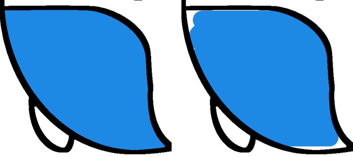
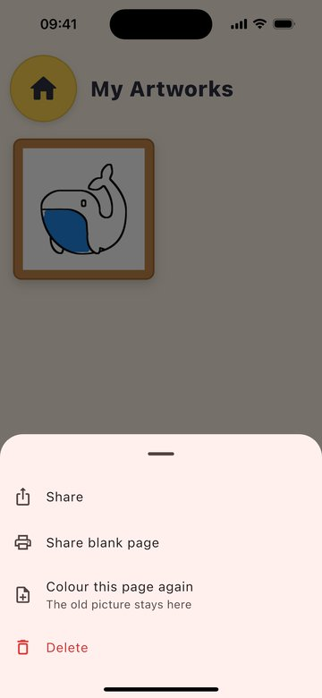
Sahibe açık sorular (kurulun listesi): P1 çocuk yolu (çocuk kendi başına "yeni kâğıt" açabilsin mi), 3–5 çocukla 10–15 dakikalık gözlem oturumu (%85 eşiği ve P3 için), P2 tek anahtar yeterli mi, P1 ve P2 hangi sürümle (2.1.2 mi 2.2.0 mı), P3'te hangi kalem kastediliyor (Büyük'te Apple Pencil basıncı karşılıyor mu), P4 için "yalnız parmağın ulaşamadığı küçük ayrıntılar hazır gelir" biçimiyle yeniden oylama isteniyor mu. Reklam beş vetoyla reddedildi; kurulun gerekçesi: Kids 1.3, "reklam yok" sözü, ağsız mimari ve "Data Not Collected".
Branch faz11/kalem-basinci, faz10 üstüne. Kurulun sıradaki işi P3 ile arka planda yürüyen içerik çalışması bu dalda birleşti. 193 test geçiyor, analiz temiz; hiçbir şey push edilmedi.
Apple Pencil basıncı (P3, 6bf4b13). Büyük modda iPad'de keçeli kalem, pastel ve neon çizgisi bastırdıkça kalınlaşır, hafif dokunuşta incelir; en hafif dokunuş da görünür iz bırakır. Kurulun şartları:
Bu Mac'te (flutter_tester, yazılımla piksel basma) 200 çizginin yeniden pişme süresi:
| Fırça | Parmak | Apple Pencil |
|---|---|---|
| Keçeli kalem | 32 ms | 32 ms |
| Pastel | 94 ms | 91 ms |
| Neon | 750 ms | 1.098 ms |
Test ortamı GPU kullanmadığı için parmakla çizilen neon bile burada kurulun 300 ms bütçesini aşıyor; sayılar yalnız ikisinin oranını gösteriyor. İlk sürümde neon beş kat yavaştı. Geniş hale katmanlarında örnekleri seyreltip büyük disklerin kenar sayısını sınırlayınca fark %46'ya indi. iPad'de Apple Pencil ile deneme, Split View ve döndürme dâhil, henüz yapılmadı; simülatör kalem basıncı veremiyor.
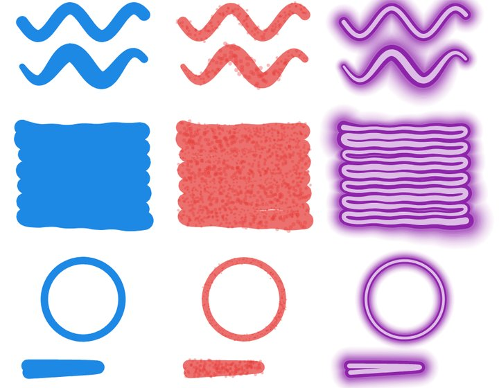
Yeni içerik (birleştirme f970012). Arka plandaki ajan master üstünde çalıştı; dalını inceleyip bu dala birleştirdim. Çakışma çıkmadı; yerelleştirme dosyalarını yeniden ürettim, fark çıkmadı.
283ea00). Tam Sürüm metni ekranın adını "Resimlerim" yazıyordu; uygulamanın her yerindeki "Eserlerim" yaptım.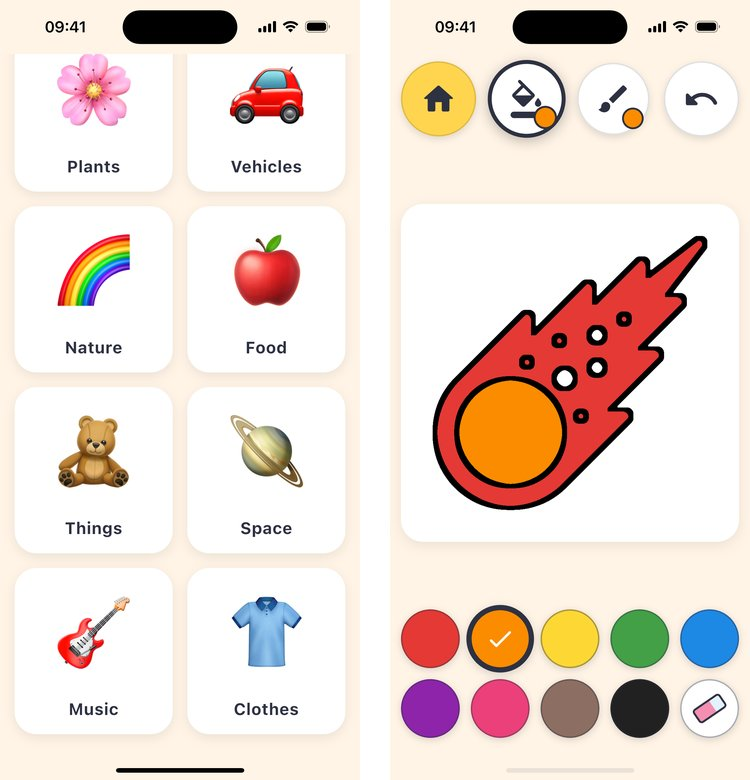
Mağaza metni. Bu özelliklerle çıkacak sürümün "Yenilikler" taslağı (TR ve EN) ve yeni sayılı tanıtım ve açıklama satırları store_listing.md dosyasında. App Store Connect'e dokunmadım; metin yalnız o sürümle girer.
Açık kalanlar: iPad'de Apple Pencil denemesi; P2 ve P3 için en eski iPad'de ve düşük donanımlı Android'de süre ölçümü; içerikle çıkan sürümde "Notes for Review" metni; on taslak dildeki yeni kategori adlarının yerli okuması.
Sonradan eklenen: Eserlerim'de VoiceOver eseri kayıtlı Türkçe adla okuyordu. Etiketi artık sayfanın kimliğinden, uygulamanın dilindeki adla üretiyorum; kayıtlı veri değişmedi. Uygulamadan kalkmış bir sayfanın eseri kayıtlı adıyla okunur. Ayrıca kendi üstüne geri dönen bir Pencil çizgisinde geniş neon katmanının sıfır uzunluklu parça üretebildiği bir uç durumu kapattım.
Bağımsız inceleme. Bir alt ajan faz9–11'in lib/ farkını benim gerekçelerimi görmeden okudu. Çökme, geri al bozulması ya da kayıt hatası bulmadı. Dört düşük önemli bulgu getirdi. Her birini önce düşen bir testle doğruladım, sonra düzelttim:
c9ee109, master'da da vardı). Pastel tanesi, sprey ve simin dağılımı ilk noktadan tohumlanıyor; kayıt dosyası koordinatı onda bir piksele yuvarladığı için açılan resimde bütün noktalar yer değiştiriyordu. Noktalar artık çizilirken o ızgaraya yazılıyor.2477f28). Başka fırçanın boyası yarım fırça boyuyla sayılıyordu; sprey, sim, pastel tanesi ve neon halesi daha uzağa ulaşıyor. Her fırça artık boyasının ulaştığı uzaklıkla sayılıyor.2477f28). Silinip yeniden boyanan bölge sayfa açıkken bir daha tamamlanmıyordu.b57ad79). Kalem artık önce değen avucu ya da parmağı devralıyor; kalem çizerken başka dokunuş yok sayılıyor, avuç ekranda dururken art arda çizgi çekilebiliyor. İki parmakla yakınlaştırma aynı. iPad'de denenmedi.Test sayısı 201, analiz temiz.
2.2.0 yerelde hazır: branch release/2.2.0, merge edilmiş master'ın (deaa77f) üstünde, push edilmedi. Sürümde PR #10'un özellikleri, içerik oturumunun kaydırma düzeltmesi ve üç yeni sayfa var (toplam 310). Mağaza metinleri ve dört yeni ekran görüntüsü seti hazır. 206 test geçiyor; ekran görüntüsü testi iPhone ve iPad'de, Türkçe ve İngilizce baştan sona geçti.
pubspec.yaml yeter. README'deki yükleme adımı artık bugünkü akışı anlatıyor: Xcode Cloud yalnız etikette derliyor.plan/kaydirma-dokunus-2026-11-05.html dosyasında.store_listing.md dosyasında 2.2.0 için "What's New" ve "Notes for Review" taslakları (TR, EN) var. Hakem notundaki kapı bilgisini koddan doğruladım.integration_test/store_shots_test.dart, tool/store/take_screenshots.py). Betik her anda ekran görüntüsünü alıp testi bir dosyayla ilerletiyor, kutlama karesini konfetiye göre seçiyor. Bütün karelerde saat 9.41 ve tam çubuk var; eski iPhone karelerinde saat 17.55–18.16 arasıydı.c9cc6b8); Android yürüyüşü artık temiz geçiyor. iOS'ta etkisi yalnız sesin çaldığı yarım saniyeydi.| Set | Boyut | Klasör |
|---|---|---|
| iPhone 6,3" Türkçe | 1206×2622 | build/store_screenshots/iphone63_tr_220_secili_captioned/ |
| iPhone 6,3" İngilizce | 1206×2622 | build/store_screenshots/iphone63_en_220_secili_captioned/ |
| iPad 13" Türkçe | 2064×2752 | build/store_screenshots/ipad13_tr_220_secili_captioned/ |
| iPad 13" İngilizce | 2064×2752 | build/store_screenshots/ipad13_en_220_secili_captioned/ |
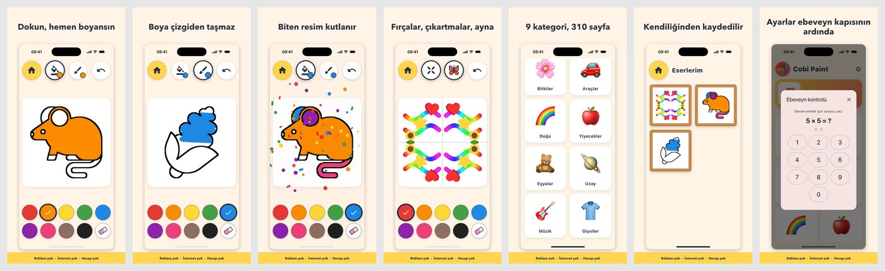
Senden beklenenler:
v2.2.0 etiketi Xcode Cloud derlemesini başlatır; derleme TestFlight'taki "Tester" grubuna düşer.Manzara modunun kaba prototipi hazır ve master'da: dal faz12/manzara-prototip, PR #13 ile 6 Kasım gecesi merge edildi (master d61fcd5). iPhone SE simülatöründe ve Android emülatöründe baştan sona denendi. Kurulun sırasındaki bir sonraki adım buydu: motor işinden önce çocuğun parçayı kendi başına yerine koyup koyamadığını görmek. Ayrıntılar planın "Manzara: kaba prototip" bölümünde.
COBI_SCENE bayrağının arkasında; bayraksız derlemede ana ekran, sayfalar ve Eserlerim aynı kalır. v2.2.0 etiketi ve Xcode Cloud derlemesi bu daldan etkilenmez.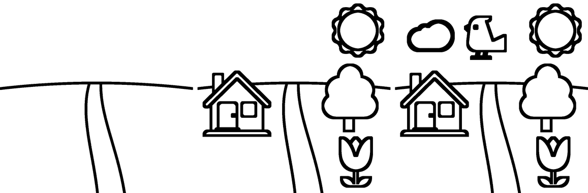
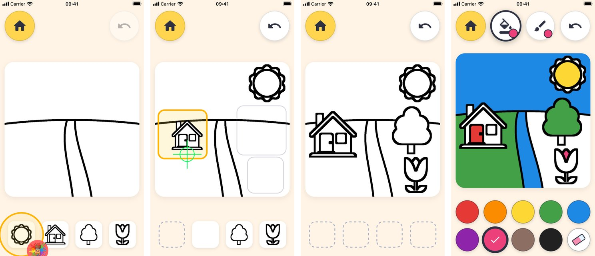
Senden beklenenler:
Bu turda yayını doğrudan güçlendiren, kimseyi beklemeyen iki işi yaptım: Manzara ekranını Apple HIG'e göre denetledim ve bütün ekranları en büyük Dynamic Type boyunda denedim. Dal faz13/gelistirmeler, master d61fcd5 üstünde. Ayrıntılı rapor: plan/hig-ve-metin-boyu-2026-11-07.html.
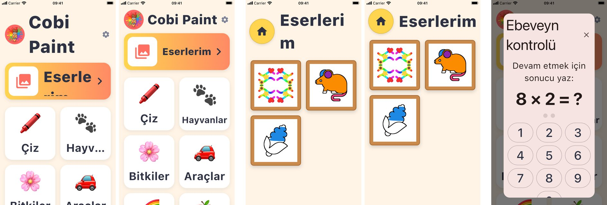